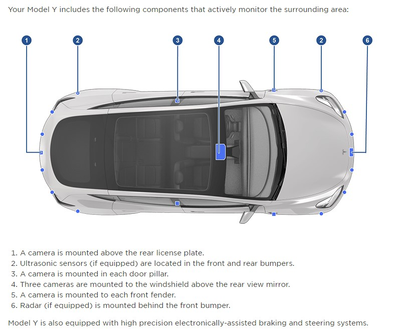
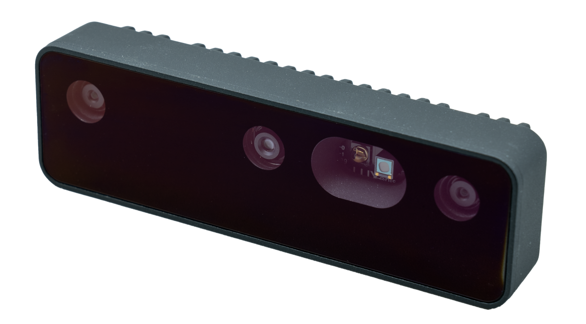
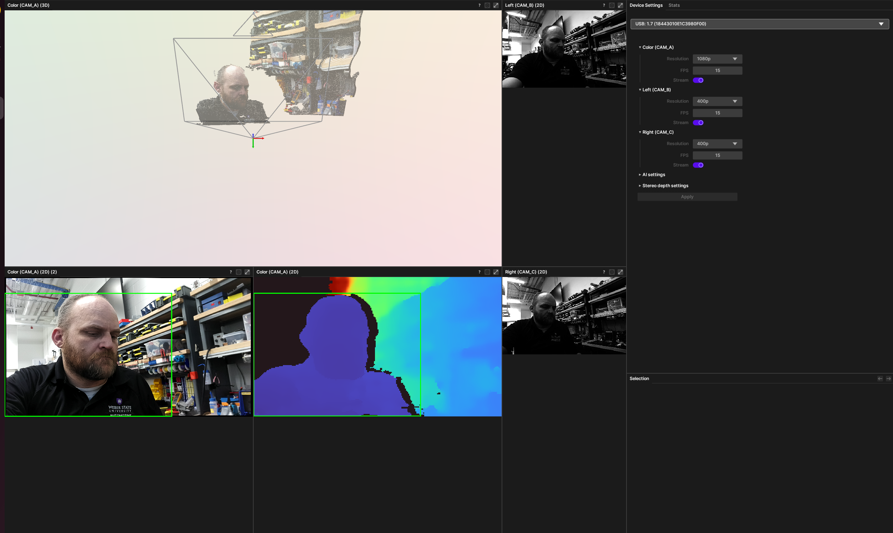
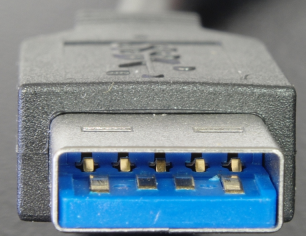
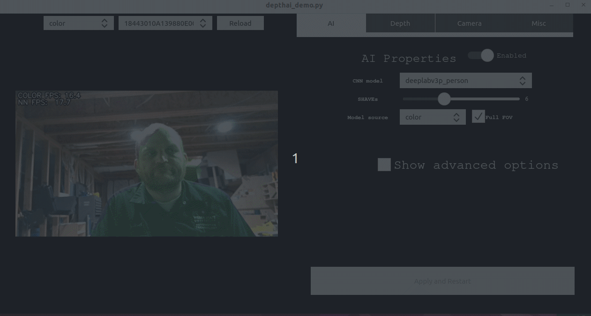

INFO - Stereo Cameras¶
Introduction¶
Stereo cameras are an integral part of perception systems in autonomous vehicles. Unlike single-lens cameras, stereo cameras capture two or more 2D images of a scene from different angles. The images are then combined to form a 3D representation, providing depth perception, which is crucial for applications such as obstacle detection, lane tracking, and mapping.
Why 3 Lenses?¶
You may encounter stereo cameras with three lenses. These are called trinocular setups and offer several advantages:
Depth Accuracy An additional lens allows the system to compare more than one pair of images for depth estimation, improving accuracy.
Field of View Each lens can be optimized for a different field of view (FoV), providing a more complete representation of the environment.
Redundancy If one lens is obstructed or fails, the third lens can provide backup.
Trifocal Lenses¶
A trifocal setup typically includes three lenses aligned horizontally. Trifocal lenses enable:
More Matched Points The trifocal tensor allows simultaneous matching of points across three views, providing richer depth information.
Improved Confidence Additional viewpoints help disambiguate complex scenes, increasing confidence in depth estimates.
Enhanced Redundancy Redundancy is further improved if one lens becomes unavailable.
Strengths and Weaknesses¶
Strengths¶
Cost-Effective Generally less expensive than LiDAR systems.
High Resolution Capable of capturing high-detail 2D images.
Versatility Can operate in a wide range of lighting conditions.
Weaknesses¶
Computational Overhead Depth estimation requires significant processing power.
Limited Range Typically shorter effective range compared to LiDAR.
Sensitivity to Lighting Sudden lighting changes can degrade performance.
Comparison to LiDAR¶
Sensing Capabilities
LiDAR provides highly accurate depth measurements but at lower spatial resolution.
Cameras capture color and texture, which are valuable for object recognition.
Computational Needs
Stereo cameras require more computation for real-time depth mapping.
LiDAR point clouds are generally faster and simpler to process for depth.
Cost
Stereo cameras are more cost-effective.
LiDAR systems are more expensive but typically more robust.
Tesla’s Forward-Facing Camera¶
Tesla uses a multi-lens forward-facing camera system. Each lens is tuned for specific tasks or viewing ranges. Tesla traditionally uses:
A main lens (up to ~150 meters)
A wide-angle lens (intersections and tight curves)
A telephoto lens (up to ~250 meters)
Some recent vehicles may use fewer cameras according to several reliable sources.


Model Y Cameras – Tesla Owners Manual https://www.tesla.com/ownersmanual/modely/en_us/GUID-682FF4A7-D083-4C95-925A-5EE3752F4865.html
Key advantages of Tesla’s approach include:
Diverse Fields of View Multiple lenses provide wide, medium, and narrow perspectives.
Redundancy Multiple cameras provide resilience against sensor failure.
Software-Driven Perception Advanced machine learning fuses camera data to infer depth and scene understanding.
Other Pertinent Information¶
Calibration Stereo cameras must be carefully calibrated for accurate depth estimation.
Sensor Fusion Often combined with LiDAR and radar to improve robustness.
OAK-D Camera¶
OAK-D cameras are part of the DepthAI ecosystem and are capable of performing computer vision and machine learning directly on-device.
OAK-D Documentation: https://docs.luxonis.com/projects/hardware/en/latest/pages/DM9098pro/


DepthAI Platform Overview¶
The DepthAI platform supports OAK (OpenCV AI Kit) cameras, enabling real-time vision processing on-device. It is commonly used in robotics, drones, IoT systems, and interactive installations.
Installation Steps¶
Install DepthAI on Linux systems by running:
sudo wget -qO- https://docs.luxonis.com/install_depthai.sh | bash
Plug the OAK-D Pro camera into the host computer and run:
depthai-viewer
Select the camera from the menu in the top-right corner.

DepthAI Installation Manual¶
Full installation instructions are available here: https://docs.luxonis.com/en/latest/pages/tutorials/first_steps/#first-steps-with-depthai
Warning
Make sure to use a USB 3 cable, as this is a very common cause of OAK connectivity issues. If you are not using USB 3, see Forcing USB2 Communication.


Install the DepthAI Repository¶
git clone --recursive https://github.com/luxonis/depthai.git
Install related submodules:
cd depthai
git pull --recurse-submodules
Install DepthAI dependencies:
sudo wget -qO- https://docs.luxonis.com/install_depthai.sh | bash
Install Python dependencies:
python3 install_requirements.py

Select a CNN Model¶


Deep dive on DeepLabV3: https://learnopencv.com/deeplabv3-ultimate-guide/
Additional DepthAI Resources¶
DepthAI Demo Documentation: https://docs.luxonis.com/en/latest/pages/tutorials/depthai_demo/#depthai-demo